It’s rigid that each RISC-V arithmetic instruction performs only one operation and must always have 3 variables.
Hardware for a variable number of operands is more complicated for a fixed number.
Design Principle 1: Simplicity favors regularity
1. Operands of the computer hardware
The operands of arithmetic instructions are restricted, they must be from a limited number of special locations built directly in hardware design called registers.
There are only 32 registers on current computers, like RISC-V. The reason for the limits of 32 registers is the second design principle of hardware:
Design Principle 2: Smaller is faster
Effective use of registers is critical to program performance.
1.1 Memory Operands
The processor can keep only a small amount of data in registers, but computer memory contains billions of data elements.
Data structures (arrays and structures) are kept in memory.
RISC-V has instructions that tansfer data between memory and registers which are called data transfer instructions.
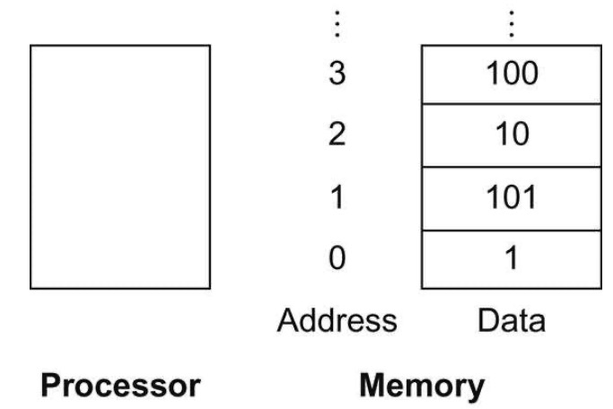
The real name for this instruction is ld, standing for load doubleword.
Assume A is an array of 100 doublewords whose base address is in x22, g and h with registers x20 and x21. Compile this C assigenment statement:
g = h + A[8];ld x9, 64(x22)
add x20, x21, x9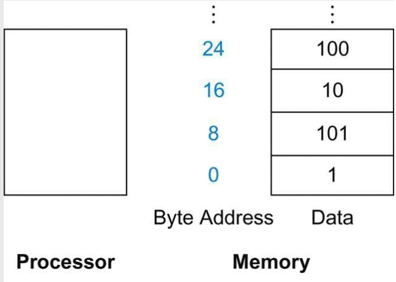
The instruction complementary to load is called store, which is sd in RISC-V.
In many architectures, words must start at addresses that are multiples of 4 and doublewords must start at addresses that are multiples of 8. This requirement is called an alignment restriction, which leads to faster data transfers.
RISC-V and Intel x86 don’t have alignment restrictions, but MIPS does.
Many programs have more variables than computers have registers. Consequently, the compiler tries to keep the most frequently used variables in registers and places the rest in memory, using loads and stores to move variables between registers and memory. The process of putting less frequently used variables (or those needed later) into memory is called spilling registers.
Constant or Immediate Operands
Many times a program will use a constant in an operation.
Add immediate or addi:
addi x22, x22, 4RISC-V dedicates register x0 to be hard-wired to the value zero.
2. Representing Instructions in the Computer
2.1 R-type
Most data we work with is in words(32-bit chunks), RISC-V represent instructions as fixed-size 32-bit words.
Translate a RISC-V assembly instruction into a machine instruction:
add x9, x20, x21The decimal representation:
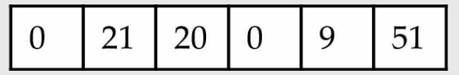
Each of these segements of an instruction is called a field. The first, fourth, and sixth fields (0, 0, 51) tell that this instruction performs addition. The second field (21 for x21), The third field (20 for x20), the fifth field (9 for x9).
This instruction can also be represented as fields of binary numbers instead of decimal:
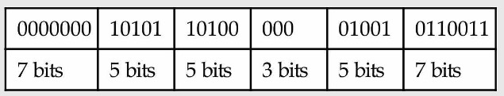
This layout of the instruction is called the instruction format. This RISC-V instruction takes exactly 32 bits.
We call the numeric version of instructions machine language and a sequence of such instructions machine code.
RISC-V Fields:
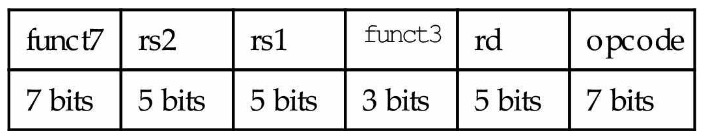
opcode: Basic operation of the instruction.
rd: The register destination operand
func3: an additional opcode field
rs1: The first register source operand
rs2: The second…
func7: an additional opcode field
A problem occurs when an instruction needs longer fields. If we load array from memory that the element index is larger than 31, it will get in trouble. Hence, we have a conflict between the desire to keep all instructions the same length and the desire to have a single instruction format. This conflict leads us to the final hardware design principle:
Design Principle 3: Good design demands good compromises
We use distinct instruction formats for different kinds of instructions. The format above is called R-type (for register).
Example:
add x18 x19 x10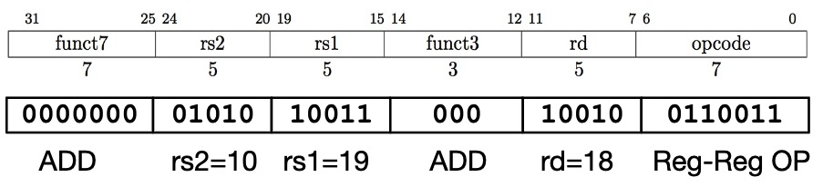
All RV32 R-format instructions:
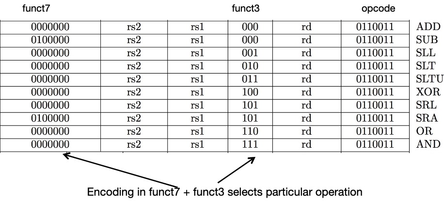
2.2 I-type
A second type of instruction format is I-type and is used by arithmetic operands with one constant operand, including addi and load instructions.
I-type:
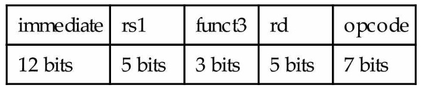
Example:
addi x15 x1 -50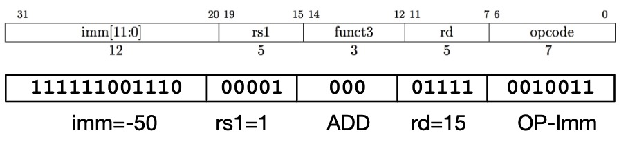
All RV32 I-format Arithmetic/Logical Instructions:
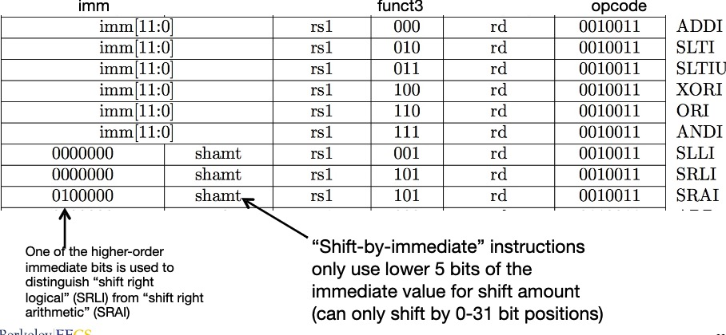
Load instructions are also I-type:
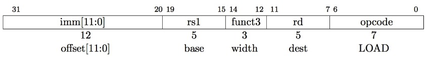
load example:
lw x14, 8(x2)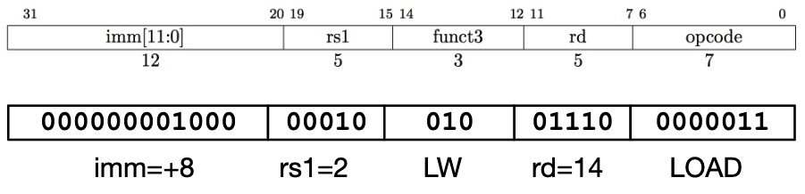
All RV32 load instructions
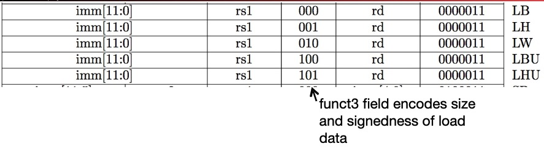
2.3 S-type
We also need a format for the store doubleword instruction, sd, which needs 2 source registers (for the base address and the store data) and an immediate for the address offset. The field of the S-type format are:
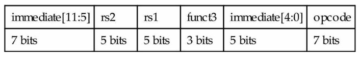
Example:
sw x14, 8(x2)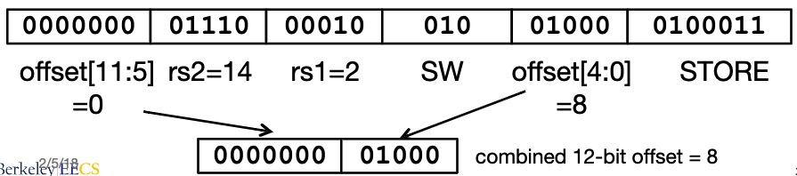
All RV32 Store Instructions:
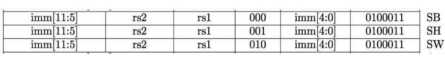
2.4 B-type
Instructions stored in a localized area of memory(code/text)
- Largest branch distance limited by size of code
- address of current instruction stored in the program counter
If we don’t take the branch:
PC = PC + 4 (next instruction)
If we do take the branch:
PC = PC + immediate (immediate is the number of bytes to jump)
B-format:
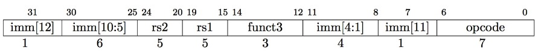
The 12 immediate bits encode 13-bit signed byte offsets (lowest bit of offset is always zero, no need to store it)
Example:
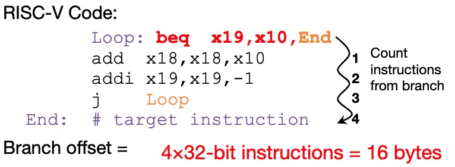
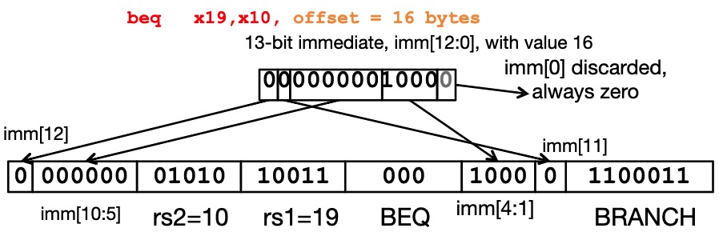
All RISC-V Branch Instructions
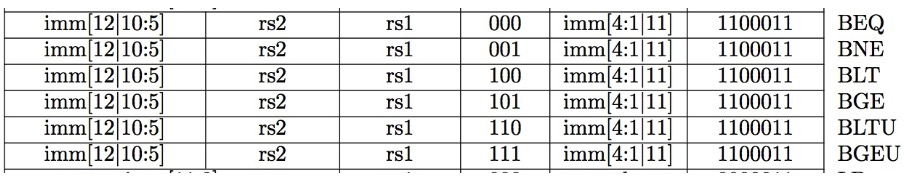
2.5 U-type
U-format for upper immediate instructions
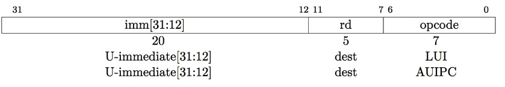
Used for 2 instructions:
LUI: load upper immediateAUIPC: add upper immediate to PC
LUI writes the upper 20 bits of the destination with immediate value, and clears the lower 12 bits. Together with ADDI to set low 12bits, can create any 32-bit value.
LUI x10 0x87654 # x10 = 0x87654000
ADDI x10 x10 0x321 # x10 = 0x87654321One corner case:
How to set 0xDEADBEEF?
LUI x10 0xDEADC # x10 = 0xDEADC000
ADDI x10 x10 0xEEF # x10 = 0xDEADBEEFThe reason is addi 12-bit immediate is always sign-extended, if top bit is set, will subtract.
For short:
li x10 0xDEADBEEF # creates two instructions2.6 J-type
J-format for jump instructions.
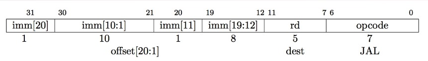
jal saves PC+4 in rd.
j is short for jal x0 Procedure.
jalr rd, rs, immediate:
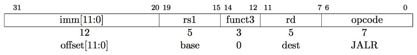
- writes PC+4 to
rd - Sets PC = rs + immediate
Example of jalr:
ret = jr ra = jalr x0, ra, 0
# call function at any 32-bit absolute address
lui x1
jalr ra x1 2. Sum
Today’s computers are built on two key principles:
- Instructions are represented as numbers
- Programs are stored in memory to be read or written, just like data
These princicples lead to the stored-program concept
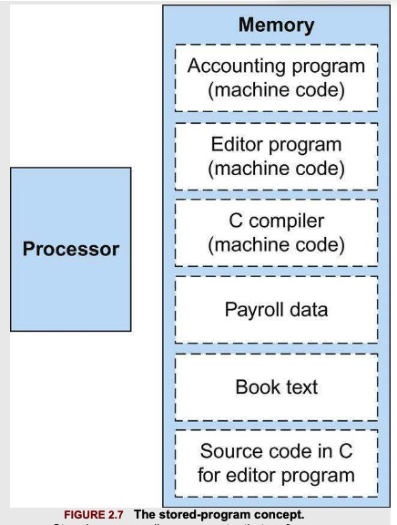
There are 6 basic types of instruction formats:
- R-format
- I-format
- S-format
- B-format
- U-format
- J-format
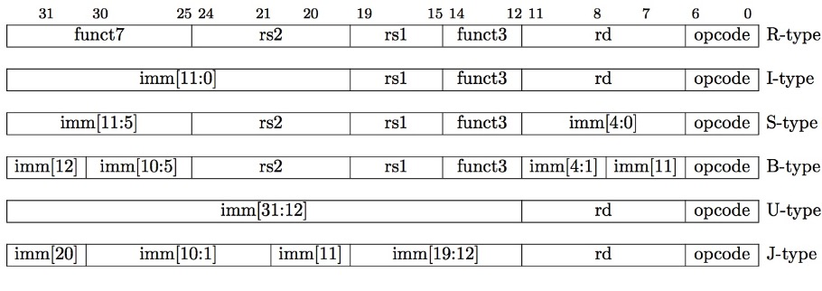
3. Logical Operations
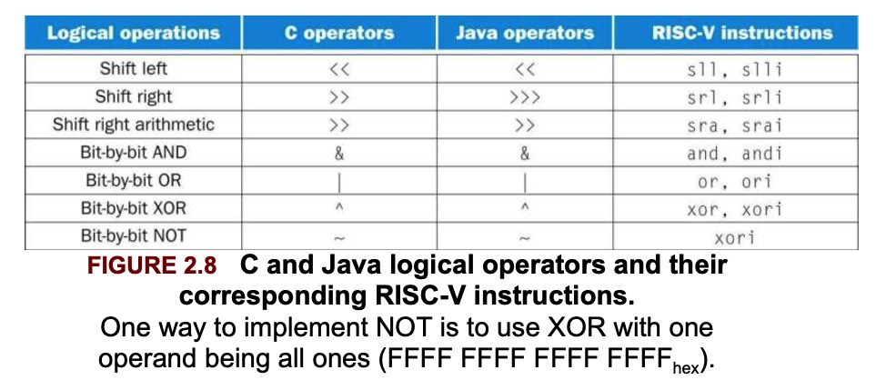
slli: shift left logical immediate
srli: shift right logical immediate
slli x11, x19, 4 // reg x11 = reg x19 << 4 bitsThis shift instruction use the I-type format. Only the lower 6 bits of the I-type format’s 12-bit immediate are actually used. The remaining 6 bits are repurposed as an additional opcode field, func6.
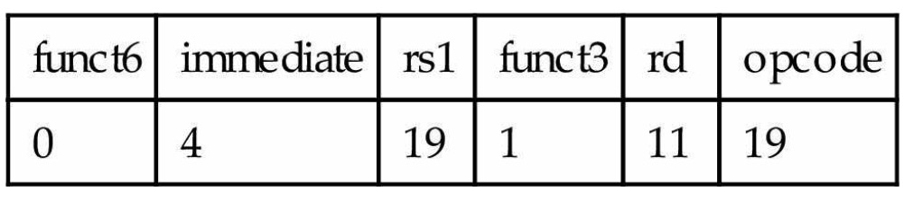
srai: shift right arithmetic immediate, it fills the vatated bits on the left with copies of the old sign bit.
4. Instructions for Making Decisions
4.1. Conditional Branches:
beq: branch if equal
beq rs1, rs2, L1bne: branch if not equal
bne rs1, rs2, L1Compiling a if-else in C:
if (i == j)
f = g + h;
else
f = g - h;The five variables f through j correspond to the five registers x19 through x23.
bne x22, x23, Else
add x19, x20, x21
beq x0, x0, Exit // A: if 0 == 0, go to Exit
Else:sub x19, x20, x21
Exit:A: We now need to go to the end of the if, so we introduce another kind of branch called unconditional branch.
4.2 Loops
Compiling a while Loop in C:
while (save[i] == k)
i += 1;Assume that i and k correspond to registers x22 and x24 and the base of the array save is in x25.
Loop: slli x10, x22, 3 // Temp reg x10 = i * 8
add x10, x10, x25 // x10 = address of save[i]
ld x9, 0(x10) // Temp reg x9 = save[i]
bne x9, x24, Exit // go to Exit if save[i] != k
addi x22, x22, 1 // i = i + 1
beq x0, x0, Loop // A: go to Loop
Exit: A: The end of the loop branches back to the while test at the top of the loop
4.3 Other branches
blt: branch if less than
bge: branch if greater than or equal
bltu: unsigned version of blt, which treated the value as unsigned numbers
bgeu: the opposite case of bltu
4.4 Bounds Check Shortcut
Treating signed numbers as if they were unsigned gives us a low-cost way of checking if $0 \leq x < y$, which matches the index out-of-bounds check for arrays.
bgeu x20, x11, IndexOutOfBounds // if x20 >= x11 or x20 < 0, go to IndexOutOfBounds5. Supporting Procedures in Computer Hardware
5.1 jump and link
Procedures allow the programmer to concentrate on just one portion of the task at a time. Procedures are one way to implement abstraction in software
In the execution of a procedure, the program must follow the six step:
- Put parameters in a place where the procedure can access them
- Transfer control to the procedure
- Acquire the storage resources needed for the procedure
- Perform the desired task
- Put the result value in a place where the calling program can access it
- Return control to the point of origin, since a procedure can be called from several points in a program.
RISC-V follows the following convention for procedure calling in allocating its 32 registers:
x10-x17: 8 parameter registers in which to pass parameters or return values.
x1: one return address register to return to the point of origin.
jal: jump and link
jal x1, ProcedureAddress // jump to ProcedureAddress and write return address to x1This link, stored in register x1 is called the return address.
To support the return from a procedure, computers like RISC-V use an indirect jump:
jalr x0, 0(x1)This jump and link register instruction branches to the address stored in register x1. Then, the calling program, or caller, puts the parameter values in x10-x17 and uses jal x1, x to branch to procedure x (sometimes called the callee). The callee then performs the calculations, places the results in the same parameter registers, and return control to the caller using jalr x0, 0(x1).
Program counter(PC): The register containing the address of the instruction in the program being executed.
The jump and link instruction can also be used to perform an unconditional branch within a procedure by using x0 as the destination register. Since x0 is hard-wired to zero, the effect is to discard the return address:
jal x0, Label5.2 stack pointer
Suppose a compiler needs more registers for a procedure than the 8 argument registers. Since we must cover our tracks after our mission is complete, any registers needed by the caller must be restored to the values that they contained before the procedure was invoked.
The ideal data structure for spilling registers is a stack. In RISC-V, the stack pointer is register x2, also known as the name sp.
By historical precedent, stacks grow from higher addresses to lower addresses. This means that you push values onto the stack by substracting from the stack pointer.
Compiling a C procedure:
long long int leaf_example(long long int g, long long int h, long long int i, long long int j) {
long long int f;
f = (g + h) - (i + j);
return f;
}Assume g, h, i, j correspond to the argument registers x10, x11,x12, x13 and f corresponds to x20.
The compiled program starts with the label of the procedure:
leaf_example:Then we need save the registers used by the procedure: push the old values onto the stack by creating space for 3 doublewords (24 bytes) on the stack and then store them:
addi sp, sp, -24 // adjust stack to make room for 3 items
sd x5, 16(sp) // save x5 for use afterwards
sd x6, 8(sp) // save x6 for use afterwards
sd x20, 0(sp) // save x20 for use afterwards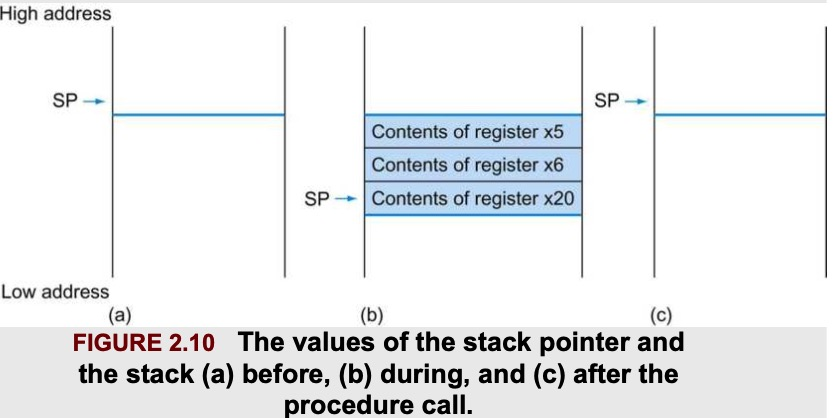
Then:
add x5, x10, x11
add x6, x12, x13
sub x20, x5, x6
addi x10, x20, 0 // return f (x10 = x20 + 0)Before returning, we restore the three old values of the registers we saved:
ld x20, 0(sp)
ld x6, 8(sp)
ld x5, 16(sp)
addi sp, sp, 24 // adjust stack to delete 3 items
jalr x0, 0(x1) // branch back to calling routineTo avoid saving and restoring a register whose value is never used, which might happen with a temporary register, RISC-V separates 19 of the registers into 2 groups:
x5-x7andx28-x31: temporary registers that are not preserved by the callee(called procedure) on a procedure callx8-x9andx18-x27: saved registers that must be preserved on a procedure call.
In the example above, we can drop x5,x6 stores and loads.
5.3 nested procedures
Suppose that the main program calls procedure A with an argument of 3, by placing the value into register x10, and then using jal x1, A. Then suppose A calls procedure B via jal x1,B with an argument 7, also placed in x10. Since A hasn’t finished its task yet, there is a conflict over the use of x10. Also, there is a conflict over the return address in x1, since it now has the return address for B. This conflict will eliminate procedure A’s ability to return its caller.
One solution is to push all the other registers that must be preserved on the stack.
Compiling a Recursive C Procedure:
long long int fact(long long int n) {
if (n < 1)
return 1;
else
return n * fact(n-1);
}Assume n corresponds to x10.
fact:
addi sp, sp, -16
sd x1, 8(sp) // save the return address
sd x10, 0(sp)The first time fact is called, sd saves an address in the program that called fact. Next we test whether n is less than 1.
addi x5, x10, -1 // x5 = n - 1
bge x5, x0, L1 // if (n - 1) >= 0, go to L1If n is less than 1, fact returns 1 by putting 1 into x10.
addi x10, x0, 1 // return 1
addi sp, sp, 16 // pop 2 items off stack
jalr // return to callerIf n is not less than 1, n is decremented and then fact is called again with the decremented value:
L1: addi x10, x10, -1 // n >= 1: argument gets(n - 1)
jal x1, fact // call fact with (n - 1)The next instruction is where fact returns; its result is in x10.
addi x6, x10, 0 // return from jal: move result of fact(n - 1) to x6
ld x10, 0(sp) // restore argument n
ld x1, 8(sp) // restore the return address
addi sp, sp, 16Next, x10 gets the product of the old argument and the result of fact(n - 1)
mul x10, x10, x6 // return n * fact(n - 1)
jalr x0, 0(x1) // return to the callerTo simplify access to static data, some RISC-V compilers reserve x3 for use as the global pointer, or gp
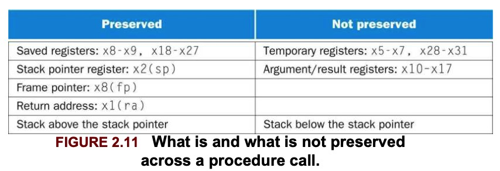
5.4 Allocating space for new data on the stack
Stack is also used to store variables that are local to the procedure but do not fit in registers, such as local arrays or structures. The segment of the stack containing a procedure’s saved registers and local variables is called a procedure frame or activation record.
Some RISC-V compilers use a frame pointer fp, or x8 to point to the first doubleword of the frame of a procedure. A stack pointer might change during the procedure, and so references to a local variable in memory might have different offsets depending on where they are in the procedure, making the procedure harder to understand. A frame pointer offers a stable base register within a procedure for local memory-references.
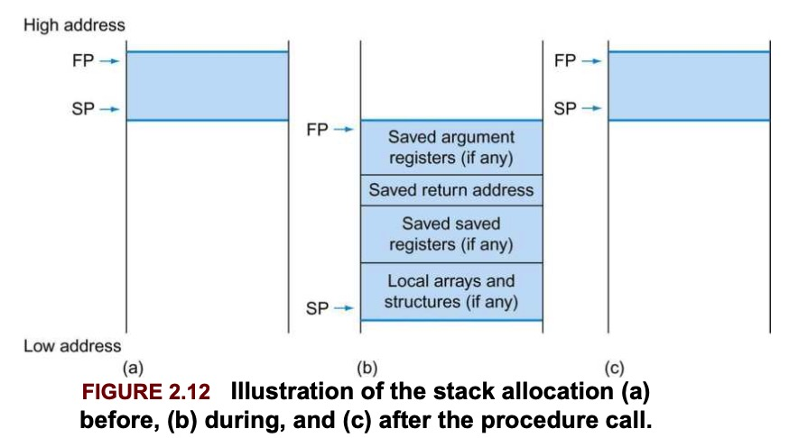
5.5 Allocating space for new data on the heap
In addition to automatic variables that are local to procedures, C needs space in memory for static variables and for dynamic data structures. The stack starts in the high end of the user addresses space and grows down.
The first part of the low end of memory is reserved, followed by the home of the RISC-V machine code, called text segment. Above the code is the static data segment, which is the place for constants and other static variables. Arrays tend to be fixed length and thus belong to static data segment, while linked lists can grow and shrink, they belong to heap.
Note that stack and heap grow toward each other.
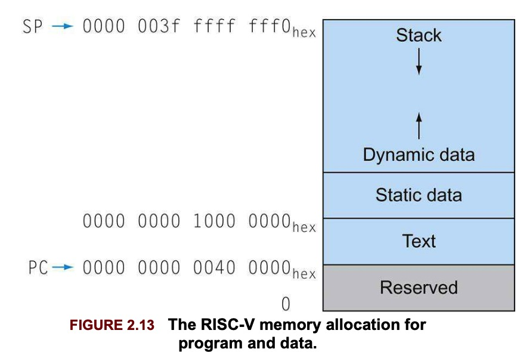
If there are more than 8 parameters, the RISC-V will put the extra parameters on the stack just above the frame pointer.
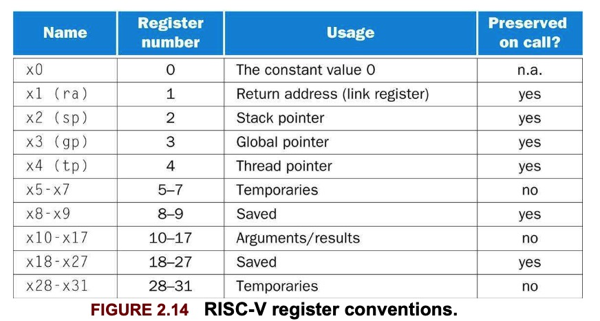
Some recursive procedures can be implemented iteratively with no need to push registers into stack.
long long int sum(long long int n, long long int acc) {
if (n < 0)
return sum(n - 1, acc + n);
else
return acc;
}This is called tail recursion, which can be implemented very efficiently (assume x10 = n, x11 = acc, and the result goes into x12)
sum:
ble x10, x0, sum_exit // go to sum_exit if n <= 0
add x11, x11, x10 // add n to acc
addi x10, x10, -1
jal x0, sum
sum_exit:
addi x12, x11, 0 // return value acc
jalr x0, 0(x1) // return to caller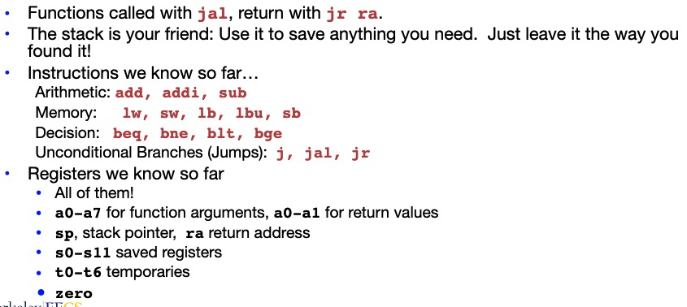
Compile the following C code:
typedef struct list {
void *car;
struct list *cdr;
}List;
List *map(List *src, void * (*f) (void *)) {
List *ret;
if (!src)
return 0;
ret = (List *) malloc(sizeof(List));
ret->car = (*f)(src->car);
ret->cdr = map(src->cdr, f);
return ret;
}Assume s0: src, s1: f, s2: ret
Preamble:
map:
addi sp sp -16 # need to store 4 entries
sw ra 12(sp)
sw s0 8(sp)
sw s1 4(sp)
sw s2 0(sp)
mv s0 a0 # save src
mv s1 a1 # save fBody:
bne a0 x0 map_skip_if
mv a0 x0 # return 0
j map_return
map_skip_if:
li a0 8 # sizeof(List)
jal ra malloc # call malloc
mv s2 a0 # save ret
lw a0 0(s0) # src->car
jal ra s1 # call f
sw a0 0(s2) # ret->car assigned
lw a0 4(s0) # src->cdr
mv a1 s1 # f
jal ra map # recursive call
sw a0 4(s2) # store to ret->cdr
mv a0 s2
map_return:
lw ra 12(sp)
lw s0 8(sp)
lw s1 4(sp)
lw s2 0(sp)
addi sp sp 16
jalr x0 ra6
Everything has a memory address:
- Since all instructions and data are stored in memory, everything has a memory address: instructions, data words…
- One register keeps address of instruction being executed: Program Counter(PC)
- Basically a pointer to memory
- Intel calls it Instruction Pointer